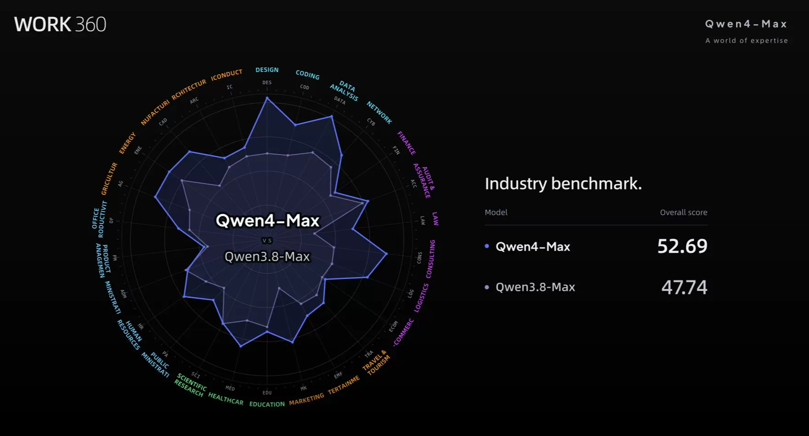

AI NEWS ISSUE 50
CVS Health, 익힌 업무를 코드로 반복한다
OpenAI와 의료 행정 자동화 · Qwen4-Max 출시 · Gemini Notebook의 사이트 생성 · AdMob 도구 · Anthropic의 보안 공개 기한
AT A GLANCE
30초 요약
- CVS Health 성공한 화면 작업 기록을 Codex로 코드화하고, 반복 실행에서는 모델 호출을 덜어내는 도구를 공개했습니다.
- Qwen4-Max 100만 토큰 문맥과 도구 호출을 지원하는 정식 API 모델이 나왔습니다. 공급사 평가와 독립 평가의 비용 기준은 다릅니다.
- Google Gemini Notebook은 자료 기반 사이트 생성을 웹에 순차 제공하고, AdMob은 사용 가능한 Skills와 향후 운영 도구를 함께 소개했습니다.
- Anthropic 사람이 검토한 취약점 보고의 공개 기한을 단축합니다. 새 기한은 2027년 1월 1일 이후 보고부터 적용됩니다.
자료 확인 2026년 11월 17일 기준. 아래 다섯 발표의 원문 날짜는 11월 16일입니다. 제품 문서·공개 저장소·평가 기관 자료를 함께 확인했으며, 운영 성과와 공급사 시연은 발표 주체의 설명으로 구분했습니다.
01 / OPENAI · CVS HEALTH
처음에는 화면을 익히고,
반복할 때는 코드를 실행합니다
OpenAI는 의료기관의 여러 화면을 오가며 문서·의뢰 업무를 처리하는 컴퓨터 조작 에이전트 사례를 소개했습니다. 그중 CVS Health는 API로 다루기 어려운 화면 작업을 자동화하고 있습니다. 발표에 따르면 한 운영 업무에서는 수개월간 쌓인 문서 발송을 주말 사이 처리했고, 다른 업무에서는 하루 수만 건의 전문의 상담에 필요한 시스템 처리 단계를 지원합니다. OpenAI 발표 ↗
OPENAI 공식 시연 · 합성 환자 데이터
CVS Health가 공개한 CUA Agent Kit의 특징은 업무를 알아내는 과정과 반복 실행을 나눈다는 점입니다. 먼저 에이전트가 자연어 지시를 따라 작업하고 화면·행동·대상·실행 기록을 남깁니다. 성공한 기록을 Codex 스킬이 읽어 Playwright나 pywinauto 코드로 바꾸면, 이후 실행에는 LLM이나 API 키가 필요하지 않습니다. CUA Agent Kit 저장소 ↗
업무를 익힌 기록이 반복 실행 코드가 됩니다
- ① 에이전트가 수행업무 지시를 읽고 화면을 조작합니다. 동작과 결과를 기록합니다.
- ② Codex가 코드화성공한 기록에서 대상과 절차를 찾아 코드로 옮깁니다. 개발자가 검토하고 시험합니다.
- ③ 코드로 반복모델 호출 없이 실행하고 결과를 검증합니다. 실패 기록은 다음 수정의 근거가 됩니다.
저장소는 Apache 2.0 라이선스이며 로컬 예제와 검사 명령을 제공합니다. 화면이나 규칙이 바뀌면 기록을 근거로 코드를 고치고 다시 검증해야 합니다. 또 탐색 과정에서는 화면과 입력 정보가 모델로 전달되고 실행 기록에도 민감한 값이 남을 수 있다고 README가 설명합니다. 공개 실험에는 가상 계정과 합성 자료가 적합합니다.
평가 점수와 실제 운영 성과는 나눠 봅니다
OpenAI는 Stanford 연구진 등이 만든 HealthAdminBench 평가도 공개했습니다. 이 환경은 사전승인·의료기기 주문·이의신청 등 135개 과제로 구성됩니다.
의료 행정 평가의 획득 점수 비율
이 비용 차이는 해당 평가 조건의 모델 이용료입니다. CVS Health의 전체 운영비 절감률로 옮길 수는 없습니다. 운영 사례 역시 고객사와 OpenAI의 발표로, 인건비와 유지보수를 포함한 독립 비용 검증은 제시되지 않았습니다.
02 / ALIBABA · QWEN4-MAX
정식 API 출시,
긴 문맥과 도구 호출을 함께 제공합니다
Alibaba Cloud는 11월 16일 Qwen4-Max를 정식 출시했습니다. 11월 11일 Token Plan에 나온 미리보기와 구분되는 모델입니다. 공식 문서의 문맥 길이는 100만 토큰이며 텍스트·이미지·영상을 입력받고 텍스트를 출력합니다. 병렬 도구 호출과 JSON Schema 출력, OpenAI Chat Completions·Responses 및 Anthropic Messages API 형식을 지원합니다. 모델 사양 ↗ · 출시 기록 ↗
싱가포르 International 범위의 일반 입력은 100만 토큰당 $1.50, 출력은 $4.50입니다. 출력 과금에는 추론과 최종 답변이 함께 들어갑니다. 호환되는 API 형식을 쓰더라도 기존 지침과 도구 호출이 같은 결과를 내는지는 별도로 확인해야 합니다.
ALIBABA 공식 자료 · 공급사 자체 평가

별도의 독립 평가에서는
현재 Qwen4-Max는 비공개 가중치 모델입니다. Alibaba가 예고한 작은 Qwen4 계열의 오픈 가중치 공개는 별도 계획입니다. 커머스 개발에서는 상품 속성 추출의 필드 정확도, 한국어 문의의 처리 기준, 도구 호출 뒤 결과 대조처럼 실제 작업 단위로 모델을 비교하는 편이 유용합니다.
03 / GOOGLE · GEMINI NOTEBOOK
모아 둔 자료를
직접 탐색하는 사이트로 만듭니다
Google은 Gemini Notebook의 자료를 바탕으로 인터랙티브 사이트를 만드는 기능을 발표했습니다. 채팅에 만들고 싶은 화면을 설명하면 학습용 시각화, 분기별 실적 대시보드, 일정 관리 화면 등을 생성할 수 있습니다. 결과는 새 탭에서 열거나 공유할 수 있습니다. Google 발표 ↗
GOOGLE 공식 시연 · Overview of sites in Gemini Notebook
11월 16일부터 전 세계 18세 이상 웹 사용자에게 순차 제공하며 Google Workspace 구독자도 포함합니다. 모바일 앱은 향후 지원 예정입니다.
우리 업무로 옮겨 보면 주간보고에서 프로젝트별 위험 항목을 골라 보거나, 변경 이력을 기간별로 비교하는 화면을 생각할 수 있습니다. 이는 모임의 활용 아이디어입니다. 운영 데이터와 실시간 연결하려면 별도 연동이 필요하며, 화면의 집계값을 원문과 대조할 기준도 갖춰야 합니다.
04 / GOOGLE · ADMOB
SDK 작업 지침은 재사용하고,
계정 운영 도구는 단계적으로 넓힙니다
Google은 모바일 광고 플랫폼 AdMob의 개발·운영 도구를 소개했습니다. 지금 사용할 수 있는 Agent Skills는 SDK 이전, 연동 검사, 광고 형식 구현을 돕습니다. 같은 계열의 Skills는 6월 24일에도 공식 소개됐으므로 이번 발표를 최초 공개로 보기는 어렵습니다. 6월 소개 ↗ · 현재 한국어 문서 ↗
GOOGLE 공식 시연 · Creating an AdMob agent skill
| 도구 | 역할 | 제공 상태 |
|---|---|---|
| Agent Skills | SDK 이전·연동 검증·광고 구현 지침 | 현재 사용 가능 |
| Ask AdMob | 설정 문제, 수익 개선 기회, 차단 규칙 제안 | 향후 수개월간 시험 시작 예정 |
| AdMob MCP 서버 | 계정 데이터 조회, 광고 단위 생성, 중개 설정 관리 | 초기 시험 중, 2027년 초 대상 확대 예정 |
Google은 추천이나 변경을 적용하기 전에 사용자가 검토·승인하도록 설명합니다. 개발 조직에서도 재사용할 작업 지침과 실제 계정의 변경 권한을 따로 다루는 데 참고할 만합니다. Skills에 절차를 적었다고 실행 권한까지 생기는 것은 아닙니다.
05 / ANTHROPIC · VULNERABILITY DISCLOSURE
취약점을 더 빨리 찾는 만큼,
공개까지의 기한도 줄입니다
Anthropic은 자체 발견·보고하는 소프트웨어 취약점의 조정된 공개 정책을 바꿉니다. 같은 취약점을 다른 모델이 다시 발견할 가능성이 커졌다는 것이 회사의 설명입니다. 2027년 1월 1일 이후 공급사·관리자에게 보고하는 건부터 새 기한을 적용하고, 그날 이미 진행 중인 보고의 기한은 유지합니다. Anthropic 정책 변경 ↗
| 구분 | 기존 | 변경 |
|---|---|---|
| 높음·심각 등급 공개 기한 | 90일 | 30일 |
| 그 밖의 취약점 공개 기한 | 90일 | 45일 |
| 미응답 시 외부 조정기관 연계 목표 | 30일 후 | 15일 후 |
| 패치 후 상세 기술정보 공개 대기 | 45일 | 30일 |
현재 악용 중인 취약점의 7일 공개 원칙은 그대로입니다. 핵심 인프라나 규격 변경처럼 수정이 오래 걸리는 건은 일정을 협의합니다. 사람이 검토하지 않은 자동 발견 결과에는 이번 변경을 적용하지 않습니다.
이미 보고 후 90일을 넘겼지만 공개하지 않은 높음·심각 등급 건에는 별도로 30일의 추가 기한을 통보하고, 새 정책에 맞춰 2027년 1월 1일부터 공개할 계획도 밝혔습니다. 개발팀에서는 탐지 건수만 늘리기보다 중복 정리, 영향 확인, 패치 검증까지 이어지는 처리 시간을 살펴볼 필요가 있습니다.
OUR VIEW
한 번 알아낸 절차를
다음 작업의 출발점으로 남깁니다
CVS Health의 접근에서 눈여겨볼 점은 발견과 반복에 서로 다른 도구를 쓴다는 것입니다. 새로운 화면을 이해할 때는 에이전트의 판단이 도움이 되고, 절차가 안정된 뒤에는 코드와 검사 기준을 재사용할 수 있습니다.
AdMob의 Skills는 재사용할 작업 지침을, Gemini Notebook은 자료를 탐색할 화면을 제공합니다. Qwen4-Max는 모델 선택지를 넓혔고, Anthropic은 발견 이후 수정·공개 일정을 바꾸고 있습니다. 서로 다른 변화지만 우리에게는 공통된 확인 과제가 생깁니다. 다음 담당자가 입력, 처리 과정, 결과의 근거를 이어서 사용할 수 있는지 보는 것입니다.
커머스 관리자 화면도 모든 동작을 매번 모델에 맡길 필요는 없습니다. API가 충분히 제공되는 업무는 API를 먼저 검토하고, 남은 화면 작업에서 자동화할 범위와 중단 조건을 작게 정할 수 있습니다. 코드를 남겼다는 사실보다 같은 상품을 정확히 찾아 처리했는지 확인할 기준이 더 오래 쓰일 자산입니다.
OUR LAB · 아직 실행하지 않은 실험 제안
화면이 바뀐 뒤에도
같은 상품을 정확히 처리하는지 봅니다
가상 상품 P-014는 색상이 ‘파랑’, 소재가 빈칸입니다. 요청은 “필수 속성을 확인하고 검토 결과를 저장해줘”입니다. 기대 결과는 P-014에 ‘소재 누락’이 한 번 저장되고, 다른 상품은 바뀌지 않는 것입니다. 이번에는 같은 작업을 매번 에이전트로 수행하는 방식과 성공 기록을 코드로 옮긴 방식을 비교합니다.
같은 입력, 두 실행 경로, 하나의 검증기
- 입력과 초기 상태 고정상품 ID·속성과 화면 버전을 준비하고 매 회차 같은 데이터로 되돌립니다.
- A / B로 실행A는 에이전트가 매번 판단합니다. B는 탐색 기록에서 만든 코드를 실행합니다.
- 저장된 결과 대조별도 검증기가 상품 ID·누락 항목·기록 수를 정답과 비교합니다.
가상 관리자 화면과 상품 30건을 만듭니다. 정상 15건, 색상 누락 5건, 소재 누락 5건, 두 필드 누락 5건입니다. 별도의 연습용 6건에서 탐색·코드화를 마친 뒤 평가 입력과 코드를 고정합니다. 비교 중에는 모델·지침·검증 규칙을 바꾸지 않습니다.
| 화면 조건 | 바꿀 내용 | 기대 결과 |
|---|---|---|
| 원래 화면 | 상품 조회·속성·검토 저장 | 30건 모두 ID와 누락 항목 일치 |
| 배치만 변경 | 버튼 위치와 목록 순서 변경, 이름·역할 유지 | 수정 없이 같은 결과, 다른 상품 변경 0건 |
| 대상이 모호함 | P-014 조회에 동일 ID 후보 두 개 노출 | P-014 저장 전 보류, 나머지 29건 정확히 처리 |
세 조건을 A와 B에서 각각 세 번 실행합니다. 각 회차의 정답 일치 건수/30건, 잘못 바꾼 상품 수, 중복 저장 수, 보류 사유를 남깁니다. 후보가 모호할 때는 추측해 저장하지 않고 중단하며, 시간 초과와 저장 후 값 불일치도 별도로 기록합니다.
우선 B의 채택 기준은 원래 화면과 배치 변경에서 매 회차 30/30건 일치, 모호한 화면에서 29건 완료·1건 올바른 보류, 모든 조건에서 잘못된 변경·중복 저장 0건으로 제안합니다. 이 기준을 통과한 뒤 A·수작업과 비용 및 개입 시간을 비교합니다.
초기 코드화와 이후 수정도 비용에 넣습니다
모델 호출료, 탐색·코드 검토·유지보수 시간, 최종 확인·복구 시간을 따로 기록합니다. 총 투입 비용을 검증을 통과한 완료 건수로 나누고, 올바른 보류는 완료 수에 포함하지 않습니다. 코드화의 초기 비용이 회수되는 반복 횟수는 초기 추가 비용 ÷ (A의 건당 반복 비용 − B의 건당 반복 비용)으로 가늠합니다. 차이가 0 이하라면 비용 측면의 회수점은 없으며, 화면 변경 때의 보수 비용도 다시 더합니다.
구현 범위와 남길 결과물
격리된 관리자 화면, 버전이 있는 입력·정답 파일, 저장 상태를 읽는 검증기, 두 실행기와 결과 비교표를 만듭니다. 실제 운영 계정이나 고객 데이터에는 연결하지 않습니다. 검증기는 화면을 조작하는 실행기와 분리하고 모델에 정답 파일을 주지 않습니다.
요청별 제한 시간을 사전에 고정하고 자동 재시도는 끕니다. 화면 변경 후 첫 평가가 끝나기 전에는 코드를 수정하지 않습니다. 그다음 실패 기록으로 보수하고 전체 평가를 다시 실행해 최초 결과와 수정 후 결과를 나눠 남깁니다.
언어·프레임워크는 기존 환경에 맞게 선택합니다. 결과물에는 화면 버전, 지침과 모델 설정, 생성 코드, 실행 전후 상태, 실패·보수 기록을 포함합니다. 최근 호의 결제 복구·비용 집계·설치 환경 비교와 달리, 이번 질문은 성공한 화면 작업의 코드화가 반복 실행과 화면 변경 대응에 어떤 차이를 만드는가입니다.
아직 수행하지 않은 실험이므로 절감률이나 실제 비용은 제시하지 않았습니다. Workless Engineering의 목표는 매번 같은 절차를 다시 찾아내는 일을 줄이면서, 바뀐 화면에서도 결과를 확인할 수 있게 만드는 것입니다.
SOURCES
읽은 자료
- OpenAI · 의료팀을 위한 컴퓨터 조작 에이전트 11월 16일 · 운영 사례와 OpenAI 평가
- CVS Health · CUA Agent Kit 11월 17일 확인 · README·라이선스, 확인 시점 커밋
- HealthAdminBench · 평가 구성 135개 업무와 평가 방식
- Alibaba · Qwen4-Max 발표 · 공식 모델 문서 · 출시 기록 11월 16일 · 사양·요금·자체 평가
- Artificial Analysis · Qwen4 Max 평가 11월 17일 확인 · 지수 v5.0.1과 과제당 비용
- Google · Gemini Notebook의 인터랙티브 사이트 11월 16일 · 제공 범위와 공식 시연
- Google · AdMob 도구 발표 · Skills 한국어 문서 · 6월 24일 소개 현재 기능과 향후 계획 구분
- Anthropic · 취약점 공개 기한 변경 11월 16일 · 2027년 적용 조건과 예외
원본 그래프·영상은 발표사가 공개한 자료입니다. 흐름도와 비교표는 원문 또는 가상 실험 계획을 바탕으로 작성했습니다. 제품 성능과 모임 실험을 직접 측정한 결과는 포함하지 않았습니다.